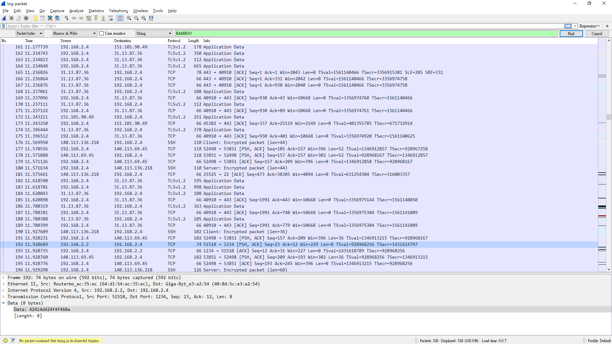
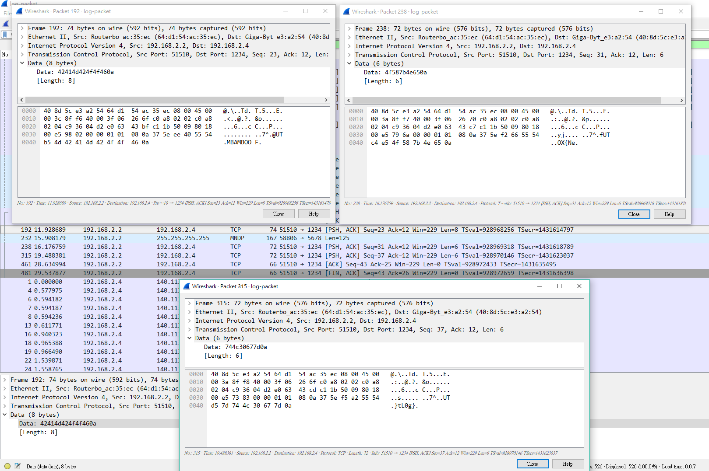

Question
Solution
睇番個file header , 原來係pcap file , 所以可以直接用wireshark開
第一時間當然search下有冇flag先啦 , 點知又真係有!

睇番個Source係由 192.168.2.2 send 去 192.168.2.4
咁就當然sort by Source睇下仲有冇其他野啦~
最後搵到 3 個係由 192.168.2.2 send 去 192.168.2.4既packet

Flag
BAMBOOFOX{NetL0g}